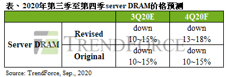

Market Trends
1.Sluggish Server Production in 4Q20 to Be Accompanied by Expanded QoQ Decline of 13-18% in Server DRAM Prices(TrendForce 2020-09-16)
Due to server ODMs’ higher-than-expected inventory of server barebones in 3Q20, additional server orders from the ODMs’ clients came to a screeching halt, therefore resulting in a QoQ decrease in overall server orders for the quarter, according to TrendForce’s latest investigations. As ODMs gradually destock their inventories of server barebones in 4Q20, data center operators are expected to step up their server procurement activities as well, albeit to a far lesser extent than 2Q20. However, given the excess inventory of server barebones, one to two quarters are needed to correct this situation, meaning ODMs will be unlikely to restart their procurement of server DRAM and server components until late 2020 or early 2021. In light of the fact that server manufacturers still hold a relatively high inventory of server DRAM, TrendForce is now forecasting a 13-18% QoQ decline in server DRAM prices for 4Q20.
Momentum of ODM server shipment is expected to slightly improve in 4Q20, though shipment still falls short of 2Q20 figures
…………
Huawei’s server DRAM procurement ahead of time is unable to reverse the downswing of server DRAM prices, which is expected to further decline in 4Q20
…………
第四季服务器生产量仍显疲弱，server DRAM价格跌幅扩大至13%~18%(集邦咨询 2020-09-16)
根据TrendForce集邦咨询旗下半导体研究处调查，第三季ODM手中服务器半成品(Server Barebone)库存较预期高，追单效应急踩煞车，造成服务器代工订单较第二季衰退，第四季随着半成品库存逐渐去化，预期资料中心的服务器采购动能将回稳，然成长力道远不及第二季。连带使得存储器与相关零组件采购动能要到今年底至明年初才可能重启，第四季server DRAM在买方库存仍高的情况下，价格跌幅扩大至13~18%。
第四季服务器出货动能略显改善，仍不及第二季出货表现
…………
华为提前拉货未能扭转server DRAM跌价态势，第四季跌幅持续扩大
…………

2.Overall Memory ASP Projected to Decline by Nearly 10% Given Persistent Oversupply in 4Q20(TrendForce 2020-10-07)
The memory market (including DRAM and NAND Flash) is still in a state of oversupply in 4Q20, according to TrendForce’s latest investigations. In light of recent U.S. sanctions against Huawei, other smartphone brands have been actively stocking up on memory products in an effort to capture Huawei’s lost market shares, but this procurement momentum is insufficient to improve the lethargic state of the memory market. In addition, as memory demand from the server industry has yet to make a noticeable recovery, overall memory ASP is expected to remain weak in 4Q20 and decrease by about 10% QoQ.
With regards to DRAM, the market is primarily concerned with the mobile DRAM and server DRAM categories, which account for the majority of DRAM bit consumption. In terms of mobile DRAM, the preemptive inventory pull by Huawei has quickly alleviated the three major DRAM suppliers’ pressure to destock their inventories. As well, Xiaomi, OPPO, and Vivo are all urgently stocking up on key components, in turn providing some support for mobile DRAM ASP, which is expected to undergo a 0-5% QoQ decline in 4Q20. On the other hand, since most CSPs and enterprise server clients are currently maintaining a relatively high inventory level of server DRAM, server DRAM ASP may potentially drop even further, with a forecasted QoQ decline of about 15% in 4Q20. By the end of this year, prices for mainstream 32GB modules are also projected to reach about US$100-110, which is close to the previous cyclical downswing’s lowest point. All in all, overall DRAM ASP is projected to decline by about 10% in 4Q20.
…………
Looking ahead to 1Q21, the decline in DRAM ASP is expected to significantly narrow, thanks to increased stock-up demand from purchasers. Conversely, the abundance of NAND Flash suppliers and persistently high level of supply bits will likely widen the decline in NAND Flash ASP, resulting in a 15% QoQ decrease in 1Q21.
第四季存储器仍处于供过于求态势，整体均价将下跌近一成(集邦资讯 2020-10-07)
第四季存储器产业(包含DRAM与NAND Flash)仍处于供过于求态势，虽然近期华为受到禁令影响，促使其它智能手机品牌积极拉货，进而分食华为失去的市场份额，然此动能仍无法改善目前疲弱的市况，加上服务器需求尚未明显复苏，预期第四季整体价格将持续走弱，季跌幅约10%。
以DRAM来说，市场最关注的焦点落在占消耗量大宗的行动式存储器与服务器存储器领域。行动式存储器方面，华为(Huawei)提前拉货使三大供应商原先的库存压力得以迅速舒缓，而小米(Xiaomi)、OPPO、vivo急于备料则让相关零组件价格受到支撑，预估第四季跌幅约为0~5%。服务器存储器方面，目前云端与企业用服务器客户库存普遍偏高，价格仍有进一步下探空间，预估其第四季均价跌幅约15%。主流模组32GB的售价也将在年底接近上一个跌价周期的低点，来到100~110美元区间。预估第四季DRAM整体均价跌幅约为10%。
…………
展望2021年第一季，DRAM将受惠于备货需求使跌幅大为收敛，而NAND Flash由于供应商众多及供给位元仍处于高水位，价格恐进一步走弱，跌幅将扩大至15%。
…………
3.SK Hynix to Possess Second Highest NAND Market Share via Acquisition of Intel’s NAND Capacity and Related Technologies(TrendForce 2020-10-20)
SK Hynix has announced today (Oct. 20) that it will acquire Intel’s NAND Flash business and Dalian-based Fab 68, which is dedicated to 3D NAND Flash production, for US$9 billion. In accordance with regulatory laws and policies, SK Hynix will apply for permission from governments in China, the U.S., and South Korea, with the acquisition expected to conclude in March 2025. TrendForce indicates that the merger between Intel’s NAND Flash business and SK Hynix will allow the latter to benefit from the complementary technologies, especially in the enterprise SSD market. Broadly speaking, this marks the next chapter of reorganization for the NAND Flash industry.
…………
SK海力士拟收购英特尔 NAND产能及相关技术，市占将跃升第二(集邦咨询 2020-10-20)
SK海力士(SK Hynix)于今(20)日宣布将以90亿美元收购英特尔(Intel)NAND 闪存及存储业务，以及位于中国大连专门制造3D NAND Flash的Fab 68厂房，SK海力士与英特尔将争取在2021年底前取得所需的政府机关许可，预计在2025年3月份完成收购。TrendForce集邦咨询旗下半导体研究处指出，此合并案将可望令两家公司在enterprise SSD领域发挥综效，并开启NAND Flash产业整并序幕。
根据TrendForce集邦咨询数据显示，SK海力士与英特尔在今年第二季的营收市占率为11.7%及11.5%，分别位于第四及第六名。若再以产品竞争力详细区分，以2019年来看，SK海力士在NAND Flash的强项为mobile领域，其中包含eMCP以及eMMC产品，占SK海力士总NAND Flash营收达60%以上。而英特尔长年于enterprise SSD领域表现特别优异，不但与三星(Samsung)并驾齐驱，且中国市占甚至超过五成，以NAND Flash所有终端应用而言，enterprise SSD为获利最佳品项。
…………
4.DDR5 Era to Officially Begin in 2021, with DRAM Market Currently Transitioning Between Generations(TrendForce 2020-11-03)
As the current mainstream solution for PC DRAM and server DRAM, both of which share the same roots in IC design, DDR4 reached a penetration rate of more than 90% in each of the above two categories in 3Q20, according to TrendForce’s latest investigations. As well, JEDEC finalized the definition of next-generation DDR5 memory in September 2019. Significant increases in the penetration rate of DDR5 PC DRAM is not expected to take place until 2022 at the earliest.
Owing to BOM cost limitations, DDR5 integration for both Intel and AMD PC platforms will be delayed to 2022
…………
Intel and AMD may likely mass produce server platforms supporting DDR5 server DRAM in 2022
…………
Owing to high-end smartphone chips from Qualcomm and MediaTek, LPDDR5 is expected to overtake DDR5 in penetration rate
…………
GDDR6 has become the mainstream graphics DRAM solution and standard spec on new graphics cards from Nvidia and AMD
DRAM市场正值跨世代交替，2021将是DDR5启用元年(集邦咨询 2020-11-03)
以晶圆设计同源的PC、Server DRAM产品而言，当前最主流解决方案为DDR4，该产品于第三季在前述两大应用类别皆占九成以上。而下一个世代DDR5的定义也已在2019年9月经由JEDEC规范制定完毕，预计PC平台导入的渗透率要到2022年才会明显拉升。
PC端两大供应平台受限BOM总成本结构， DDR5导入计划延至2022年
…………
英特尔、AMD可望在2022年量产DDR5 Server DRAM产品
…………
高通、联发科高端芯片加持，LPDDR5渗透率将超前DDR5
…………
GDDR6已成主流 Graphic DRAM解决方案，英伟达、AMD列为新品标配
5.国产厂商全面爆发，上半年全球存储产业观察重点(全球半导体观察 2020-10-12)
…………
作为国内最大、全球第四大NOR芯片供货商，兆易创新开年不久便见识了半导体资本狂潮。2月13日，兆易创新股票涨幅超9%，股价创历史新高，总市值达到1020.73亿元，成为国内第六家市值破千亿的半导体公司。
…………
进入5月，多款搭载长鑫存储10纳米级DDR4芯片的内存条上市，首款中国芯的光威弈 PRO DDR4 内存条由深圳嘉合劲威制造。中国自主研发的DRAM芯片终于投入市场，内存芯片产业史又写下一笔。
…………
三星电子、SK海力士和美光科技占据全球DRAM市场超过九成的份额。其中，居于前两位的三星和SK海力士，都将在DRAM生产中导入极紫外光光刻设备EUV技术。
…………
根据美光提供的参数，LPDDR5相较LPDDR4整机省电5%～10%，续航延长5%～10%。
SK海力士计划今年量产DDR5，三星计划2021年基于D1a工艺大规模量产DDR5，美光1Znm制程的DDR5寄存型DIMM(RDIMM)已开始出样。
…………
DRAM和NAND Flash是最主流的存储器产品。在DRAM领域，三家国际厂商把控全球主要市场份额。受益于长鑫存储DRAM芯片推出，中国存储器开始实现中低端领域的部分替代。
…………
Vendor News
1. Micron Readies World’s First Multichip Package With LPDDR5 DRAM for Mass Production(Micron 2020-10-20)
Micron Technology, Inc. (Nasdaq: MU), today announced the launch of uMCP5, the industry’s first universal flash storage (UFS) multichip package with low-power DDR5 (LPDDR5) DRAM. Now ready for mass production, Micron’s uMCP5 combines high-performance, high-density and low-power memory and storage in one compact package, equipping smartphones to handle data-intensive 5G workloads with dramatically increased speed and power efficiency. The multichip package uses Micron’s LPDDR5 memory, high-reliability NAND and leading-edge UFS 3.1 controller to power advanced mobile features previously only seen in costly flagship devices using discrete products, such as stand-alone memory and storage. Now available on other high-end phones, these emerging technologies — such as image recognition, advanced artificial intelligence (AI), multicamera support, augmented reality (AR) and high-resolution displays — are becoming accessible to more consumers.
…………
Micron uMCP5 brings unparalleled speed and efficiency to the 5G ecosystem
…………
2.Samsung, SK hynix All-out to Develop 4th-Generation DRAMs(BusinessKorea 2020-10-13)
Samsung Electronics and SK hynix are speeding up development of next-generation DRAMs to be produced with micro-fabrication technology. They are endeavoring to overcome physical limitations by speeding up big data processing and reducing chip sizes.
Samsung Electronics is planning to bring in EUV lithography equipment in the second half of 2020 to mass-produce 4th-generation 10-nm-level (1a) 16Gb DDR5 DRAMs.
…………
SK hynix is also in the middle of setting up a clean room for an EUV line at its M16 plant on Icheon Campus in Gyeonggi Province. It is planning to finish the construction of the clean room by the end of 2020 and bring in EUV equipment for production of 4th-generation 10-nm DRAMs in 2021.
……
3.Samsung Widens Its Lead In The Smartphone Dram Nand Market In1H20(2020-10-15)
This Strategy Analytics research finds that Samsung Memory led the smartphone memory market (DRAM & NAND) with 49 percent revenue share followed by SK Hynix and Micron in H1 2020. Samsung Memory , SK Hynix and Micron captured almost 84 percent revenue share in the global smartphone memory market in H1 2020.
…………
DRAM Market
The smartphone DRAM chip revenue witnessed a marginal decline in H1 2020 over H1 2019 as demand shifted towards non-mobile applications. In terms of market share, again Samsung Memory led, registering a revenue share of 54 percent followed by SK Hynix with 24 percent and Micron with 20 percent in the smartphone DRAM market in H1 2020.
4.SK hynix Launches World’s First DDR5 DRAM(SK hynix 2020-10-06)
SK hynix Inc announced to launch world’s first DDR5 DRAM. It is a high-speed and high-density product optimized for Big Data, Artificial Intelligence (AI), and machine learning (ML) as a next generation standard of DRAM.
Since SK hynix announced the development of World’s First 16 Gigabit (Gb) DDR5 DRAM on November 2018, the Company has provided its major partners including Intel with sample products, and has completed various tests and verification of its functions and compatibility. This will allow SK hynix to provide its customers with the products once the DDR5 market becomes active.
…………
5.SK Hynix to Buy Intel’s NAND Memory Business For $9 Billion(AnandTech 2020-10-20)
In a joint press release issued early this morning, SK Hynix and Intel have announced that Intel will be selling the entirety of its NAND memory business to SK Hynix. The deal, which values Intel’s NAND holdings at $9 billion, will see the company transfer over the NAND business in two parts, with SK Hynix eventually acquiring all IP, facilities, and personnel related to Intel’s NAND efforts. Notably, however, Intel is not selling their overarching Non-Volatile Memory Solutions Group; instead the company will be holding on to their Optane memory technology as they continue to develop and sell that technology.
…………
In the interim, however, the next step will be up to regulators. SK Hynix’s acquisition will need the approval of American, South Korean, and Chinese regulators, which the companies expect to take around a year – and at which point SK Hynix can start the actual acquisition. Meanwhile Intel is set to announce its Q3 earnings this Thursday, at which point we may hear a bit more about the deal from Intel’s perspective. SK Hynix’s own earnings call will follow in a couple of weeks, on November 3rd.
6. AMD Unveils Zen 3 Architecture, Ryzen 5000 CPUs With 19% IPC Uplift, Higher Boost(CRN 2020-10-08)
AMD unveiled its next-generation Zen 3 architecture and the first product line it will power, the Ryzen 5000 desktop processors, which will feature up to 4.9 GHz in boost speeds and 16 cores for what the chipmaker says will provide the best single- and multi-threaded performance in a PC.
The new 7-nanometer Zen 3 architecture, revealed in a video by the Santa Clara, Calif.-based company Thursday, comes with a 19 percent uplift in instructions per clock (IPC) over the previous-generation Zen 2 as well as highest maximum boost frequencies and a redesigned core layout and cache topology that gives the processors’ cores two times faster access to a larger cache.
…………
7.ASML 第 3 季營收 40 億歐元，增 4 台 EUV 約 5.95 億歐元訂單(TechNews 2020-10-14)
全球半導體微影技術領導廠商艾司摩爾 (ASML) 於 14 日發佈 2020 年第 3 季財報，銷售淨額 (net sales) 為 40 億歐元，淨收入 (net income) 達到 11 億歐元，毛利率 (gross margin) 為 47.5%，新增訂單金額 29 億歐元。
…………
針對業務的發展，ASML 表示，DUV (深紫外光) 微影系統業務在第 3 季已對首台 TWINSCAN NXT:2050i 微影系統進行認證，並於第 4 季初完成出貨。
…………
而在 EUV (極紫外光) 微影系統業務方面，絕大部分在客戶端的 NXE:3400B EUV 系統都已完成生產力模組 (productivity packages) 的升級。ASML 也公布了新一代 EUV 系統 TWINSCAN NXE:3600D 的最終規格，該系統的生產力提高 18%，能在 30 mJ/cm² 的曝光能量下達到每小時曝光 160 片晶圓的生產力，同時將匹配機器疊對精度（matched machine overlay）提高到1.1 nm，該系統預計於 2021 年中開始出貨。
8.南亚科技第三季度实现营收36亿元，DRAM平均售价降低(TechWeb 2020-10-13)
10月12日，南亚科技宣布第三季营业收入为新台币153.24亿元（约合人民币36亿元），较上季减少7.1%。
南亚科技表示，第三季度DRAM（动态随机存取存储器）平均售价及销售量较上个季度减低个位数百分比。
南亚科技第三季营业毛利为新台币39.62亿元，毛利率25.9%，较上季减少4.7%。
南亚科技第三季税后净利为新台币67.61亿元，每股盈余为新台币2.21元。
4th that the deal was completed
“As a result of this transfer, Dynabook has become a wholly owned subsidiary of Sharp,” Toshiba said in a statement.
…………
New Technology
Micron UFS-Based MCP (uMCP)(Micron)
Micron’s uMCP5 product brings flagship-level performance into high-end phones, delivering unparalleled efficiency and battery life in a compact design. Micron uMCP5 offers the industry’s fastest storage and memory interface, able to process heavier workloads associated with 5G without compromising on performance or power use.
…………